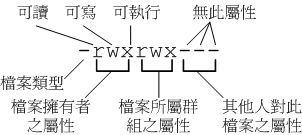

初次接触 Linux 的朋友大概会觉得很怪异，怎么『Linux 有这么多使用者，还分什么群组，有什么用？』。这个『使用者与群组』的功能可是相当健全而好用的一个安全防护呢！怎么说呢？由于 Linux 是个多人多任务的系统 ( 已经提过若干次��！ )，因此可能常常会有多人同时使用这部主机来进行工作的情况发生，为了考虑每个人的隐私权，因此，这个『档案拥有者』的角色就显的相当的重要了！例如当你将你的e-mail情书转存成档案之后，放在您自己的家目录，您总不希望被其它人看见自己的情书吧？这个时候，你就把该档案设定成『只有档案拥有者，就是我，才能看与修改这个档案的内容』，那么即使其它人知道你有这个相当『有趣』的档案，不过由于您有设定适当的权限，所以其它人自然也就无法知道该档案的内容��！
那么群组呢？为何要设定档案还有所属的群组？其实，群组最简单的功能之一，就是当您在团队开发资源的时候最有用啦！举个例子来说好了，假如在我的主机上面有两个团体，这第一个团体名称为 testgroup 而他的成员是 test1, test2, test3 三个，第二个团体名称为 treatgoup 他的团员为 treat1, treat2, treat3，这两个团体之间是互相有竞争性质的，但是却又要缴交同一份报告，然而每组团员又需要同时可以修改自己的团体内任何人所建立的档案，且不能让非自己团体以外的人看到自己的档案内容！这个时候怎么办？呵呵！在 Linux 底下可就很简单啦！我可以经由简易的档案权限设定，就能限制非自己团队( 亦即是群组�� )的其它人不能够阅览内容��！而且亦可以让自己的团队成员可以修改我所建立的档案！同时，如果我自己还有私人隐密的文件，仍然可以设定成让自己的团队成员也看不到我的档案数据，很方便吧！另外，如果 teacher 这个账号是 testgroup 与 treatgroup 这两个群组的老师，他想要同时观察两者的进度，因此需要两边的群组都能够进去观看，这个时候，您可以设定 teacher 这个账号，『同时支持 testgroup 与 treatgroup 这两个群组！』，也就是说，每个人都可以有多个群组的支持呢！
这样说或许你还不容易理解这个使用者与群组的关系吧？没关系，我们可以使用目前『家庭』的观念来进行解说喔！假设有一家人，家里只有三兄弟，分别是王大毛、王二毛与王三毛三个人，而这个家庭是登记在王大毛的名下的！所以，『王大毛家有三个人，分别是王大毛、王二毛与王三毛』，而且这三个人都有自己的房间，并且共同拥有一个客厅喔！这样说来应该有点晓得了喔！那个『王大毛家』就是所谓的『群组』��，至于三兄弟就是分别为三个『使用者』，而这三个使用者是在同一个群组里面的喔！而三个使用者虽然在同一群组内，但是我们可以设定『权限』，好让某些使用者个人的信息不被群组的所有人查询，以保有个人『私人的空间』啦！而设定群组共享，则可让大家共同分享喔！
- 由于王家三个人各自拥有自己的房间，所以，王二毛虽然可以进入王三毛的房间，但是二毛不能翻三毛的抽屉喔！那样会被三毛 K 的！因为抽屉里面可能有三毛自己私人的东西，例如情书啦，日记啦等等的，这是『私人的空间』，所以当然不能让二毛拿��！
- 由于共同拥有客厅，所以王家三兄弟可以在客厅打开电视机啦、翻阅报纸啦、坐在沙发上面发呆啦等等的！反正，只要是在客厅的玩意儿，三兄弟都可以使用喔！因为大家都是一家人嘛！
好了，那么今天又有个人，叫做张小猪，他是张小猪家的人，与王家没有关系啦！这个时候，除非王家认识张小猪，然后开门让张小猪进来王家，否则张小猪永远没有办法进入王家，更不要说进到王三毛的房间啦！不过，如果张小猪透过关系认识了三毛，并且跟王三毛成为好朋友，那么张小猪就可以透过三毛进入王家啦！呵呵！没错！那个张小猪就是所谓的『其它人， Others 』��！因此，我们就可以知道啦，在 Linux 里面，任何一个档案都具有『User, Group 及 Others』三个权限！我们可以将上面的说明以底下的图示来解释：
不过，这里有个特殊的人物要来介绍的，那就是『万能的天神』！这个天神具有无限的神力，所以他可以到达任何他想要去的地方，呵呵！那个人在 Linux 系统中的身份代号是『 root 』啦！所以要小心喔！那个 root 可是『万能的天神』喔！
无论如何，『使用者身份』，与该使用者所支持的『群组』概念，在 Linux 的世界里面是相当的重要的，他可以帮助您让您的多任务 Linux 环境变的更容易管理！更详细的『身份与群组』 设定，我们将在账号管理再进行解说。底下我们将针对档案系统与档案权限来进行说明。
大致了解了 Linux 的使用者与群组之后，接着下来，我们要来谈一谈，那么这个档案的权限要如何针对这些所谓的『使用者』与『群组』来设定该档案的权限呢？这个部分是相当的重要的，尤其对于初学者来说，因为档案的权限与属性是学习 Linux 的一个相当重要的关卡，如果没有这部份的概念，那么您将老是听不懂别人在讲什么呢！尤其是当您在您的屏幕前面出现了『Permission deny』的时候，不要担心，『肯定是权限设定错误』啦！呵呵！好了，闲话不多聊，赶快来瞧一瞧先：
嗯！既然要让你了解 Linux 的档案属性，那么有个重要的也是常用的指令就必须要先跟你说��！那一个？！就是『 ls 』这一个 list 档案的指令��！在你以 root 的身份登入 Linux 之后，下达『ls -al 』看看，会看到底下的几个咚咚：
[root@tsai root]# ls -al
total 64
drwxr-x--- 4 root root 4096 Feb 14 22:02 .
drwxr-xr-x 23 root root 4096 Feb 16 13:35 ..
-rw-r--r-- 1 root root 1210 Feb 10 06:03 anaconda-ks.cfg
-rw------- 1 root root 12447 Feb 14 23:22 .bash_history
-rw-r--r-- 1 root root 24 Jun 11 2000 .bash_logout
-rw-r--r-- 1 root root 234 Jul 6 2001 .bash_profile
-rw-r--r-- 1 root root 217 Feb 9 22:06 .bashrc
-rw-r--r-- 1 root root 210 Jun 11 2000 .cshrc
drwx------ 2 root root 4096 Feb 14 21:54 .gnupg
-rw------- 1 root root 8 Feb 14 22:05 .mysql_history
drwx------ 2 root root 4096 Feb 10 00:44 .ssh
-rw-r--r-- 1 root root 196 Jul 11 2000 .tcshrc
-rw-r--r-- 1 root root 1126 Aug 24 1995 .Xresources第一栏 二 三 四 五 六 七
[档案属性][档案数][拥有者][所有者群组][大小][建档日期][档名]
ls 是『list』的意思，与在早期的 DOS 年代的 dir 类似功能。而参数『-al』则表示列出所有的档案（包含隐藏档，就是档名前面第一个字符为 . 的那种档案）。如上所示，在你第一次以 root 身份登入 Linux 时，如果你输入指令后，应该有上列的几个东西，先解释一下上面七个字段个别的意思：
- 第一栏代表这个档案的属性：这个地方最需要注意了！仔细看的话，你应该可以发现这一栏其实共有十个属性：

- 第一个属性代表这个档案是『目录、档案或连结文件』：
- 当为[ d ]则是目录，例如上表的第 11 行；
- 为[ - ]则是档案，例如上表的第 5 行；
- 若是[ l ]则表示为连结档(link file)；
- 若是[ b ]则表示为装置文件里面的可供储存的接口设备；
- 若是[ c ]则表示为装置文件里面的串行端口设备，例如键盘、鼠标。
- 接下来的属性中，三个为一组，且均为『rwx』的三个参数的组合。其中，[ r ]代表可读、[ w ]代表可写、[ x ]代表可执行：
- 第一组为『拥有人的权限』，以第五行为例，该档案的拥有人可以读写，但不可执行；
- 第二组为『同群组的权限』；
- 第三组为『其它非本群组的权限』。
范例：若有一个档案的属性为『-rwxr-xr--』，简单的可由下面说明之：
[-][rwx][r-x][r--]
1 234 567 890
1 为：代表这个文件名为目录或档案（上面为档案）
234为：拥有人的权限（上面为可读、可写、可执行）
567为：同群组使用者权限（上面为可读可执行）
890为：其它使用者权限（上面为仅可读）
上面的属性情况代表一个档案、这个档案的拥有人可读可写可执行、但同群组的人仅可读与执行，非同群组的使用者仅可读的意思！
- 除此之外，需要特别留意的是 x 这个标号！若文件名为一个目录的时候，例如上表中的 .ssh 这个目录：
可以看到这是一个目录，而且只有 root 可以读写与执行。但是若为底下的样式时，请问非 root 的其它人是否可以进入该目录呢？
drwx------ 2 root root 4096 Feb 10 00:44 .ssh
咦！似乎好像是可以喔！因为有可读[ r ]存在嘛！『错！』答案是非 root 这个账号的其它使用者均不可进入 .ssh 这个目录，为什么呢？因为 x 与 目录 的关系相当的重要，如果您在该目录底下不能执行任何指令的话，那么自然也就无法执行 ls, cd 等指令，所以��，也就无法进入了，因此，请特别留意的是，如果您想要开放某个目录让一些人进来的话，请记得将该目录的 x 属性给开放呦！
drwxr--r-- 2 root root 4096 Feb 10 00:44 .ssh
- 另外，你也必须要更加的小心的是，在 Windows 底下一个档案是否具有执行的能力是藉由『附档名』来执行的，例如：.exe, .bat, .com 等等，但是在 Linux 底下，我们的档案是否能执行，则是藉由是否具有 x 这个属性来决定的！所以，跟档名是没有绝对的关系的！这点还请特别留意呢！
- 第二栏表示为连结占用的节点 (i-node) ( 若为目录时，通常与该目录底下还有多少目录有关 )这部分将在介绍连结 link 档案时 (下一节) 再深入的介绍；
- 第三栏表示这个档案（或目录）的『拥有人』；
- 第四栏表示拥有人的群组；
这里再次解释一下，在 Linux 中，你的 ID ( 如 root 或 test 等账号均是所谓的 ID ) 即是你的身份，而且你还有附属在一个或多个群组之下，例如刚刚我们上面提到的，你有一个团体 ( 即群组 ) 代号为 testgroup ，且这个群体里有三个人，其代号分别是 test1, test2, 与 test3，则这三个人为同一群组即 testgroup！那么如果以上图的[-rwxrwx---]的档案属性来看，如果该档案属于 test1 所有，那么 test2, test3 亦有读、写、执行的权力，因为他们都属于同一个 group 呀！而如果您不是属于 test1, test2, test3 的任何一个人，也不属于 testgroup 这个群组时，那么您将不具备读、写、执行这个档案的权限了！
- 第五栏为这个档案的大小；
- 第六栏为这个档案的建档日期或者是最近的修改日期，分别为月份、日期及时间。请特别留意，如果您是以繁体中文来进行安装您的 Linux 时，那么预设的语系可能会被改为中文。而由于中文无法显示在文字型态的终端机上面，所以这一栏会成为怪怪的乱码，这个时候，请修改一下 /etc/sysconfig/i18n 这个档案，里面的『 LC_TIME 』修改为：『 LC_TIME=en 』再储存离开，再登入一次，就可以得到英文字形显示的日期了！那么如何修改该档案呢？呵呵！以 root 身份用 vi 修改！ ；
- 第七栏为这个档案的档名，如果档名之前多一个『 . 』，则代表这个档案为『隐藏档』，例如上表第 6 行的『.bashrc_history』档名即是隐藏档，由于我们有下一个参数为 ls -al，所以连隐藏档都列出来，如果你只输入 ls 则档名有加『 . 』的档案就不会被显示出来！
对于更详细的 ls 用法，还记得怎么查询吗？对啦！使用 man ls 或 info ls 去看看他的基础用法去！自我进修是很重要的，因为『师傅带进门，修行在个人！』，自古只有天才学生，没有天才老师呦！加油吧！ ^_^
- 例题一：如果有下面的两个档案：
-rw-r--r-- 1 root root 238 Jun 18 17:22 test.txt
-rwxr-xr-- 1 test1 testgroup 5238 Jun 19 10:25 ping_tsai
请说明两个档案的拥有者与其相关的权限为何？
答：
- 档案『 test.txt 』的拥有人为 root ，群组为 root 。至于权限方面则只有 root 这个账号可以存取此档案，其它人则仅能读此档案；
- 另一个档案『 ping_tsai 』的拥有人为 test1 ，而群组为 testgroup。其中， test1 可以针对此档案具有可读可写可执行的权力，而同群组的 test2, test3 两个人与 test1 同样是 testgroup 的群组账号，则仅可读可执行但不能写 (亦即不能修改)，至于非 testgoup 这一个群组的人则仅可以读，不能写也不能执行！
- 例题二：如果我的目录为底下的样式：
drwxr-xr-- 1 test1 testgroup 5238 Jun 19 10:25 groups/
请问 testgroup 这个群组的成员与其它人( others )是否可以进入本目录？
答：
- 档案拥有者 test1 可以在本目录中进行任何工作；
- 而 testgroup 这个群组的账号，例如 test2, test3 亦可以进入本目录进行工作，但是不能在本目录下进行写入的动作；
- 至于 other 的权限中虽然有 r ，但是由于没有 x 的权限，因此 others 的使用者，并不能进入此目录！
Linux 档案属性的重要性：
与 Windows 系统不一样的是，在 Linux 系统（或者说 Unix-Like 系统）当中，每一个档案都多加了很多的属性进来，尤其是群组的概念，这样有什么用途呢？基本上，最大的用途是在『安全性』上面的。举个简单的例子，在你的系统中，关于系统服务的档案通常只有 root 才能读写，或者是执行，例如 /etc/shadow这一个账号管理的档案，由于该档案记录了你的系统中的所有账号的数据，因此是很重要的一个信息文件，当然不能让任何人读取，只有 root 才能够来读取��！所以该档案的属性就会成为 [ -rw------- ]��！
那么，如果你有一个开发团队，在你的团对中，你希望每个人都可以使用某一些目录下的档案，而非你的团队的其它人则不予以开放呢？以上面的例子来说，testgroup 的团队共有三个人，分别是 test1, test2, test3 ！那么我就可以将 test1 的档案属性订为 [ -rwxrwx--- ]来提供给 testgroup 的工作团队使用��！这可是相当重要的。
再举个例子来说，如果你的目录权限没有作好的话，可能造成其它人都可以在你的系统上面乱搞��！例如本来只有 root 才能做的开关机、ADSL 的拨接程序、新增或删除使用者等等的指令，若被你改成任何人都可以执行的话，那么如果使用者不小心给你重新开机啦！重新拨接啦！等等的！那么你的系统不就会常常莫名其妙的挂掉��！而且万一你的使用者的密码被其它不明人士取得的话，只要他登入你的系统就可以轻而易举的执行一些 root 的工作！可怕吧！因此，在你修改你的 linux 档案与目录的属性之前，一定要先搞清楚，什么是可变的，什么是不可变的！千万注意��！
好了，我们已经知道档案权限对于一个系统的安全重要性了，也知道档案的权限对于使用者与群组的相关性了，好了，那么如何修改一的档案的权限呢？又！有多少档案的权限我们可以修改呢？其实一个档案的权限很多嘛！大致上我们先介绍几个简单的，例如：群组、拥有者、各种身份的权限等等。chgrp ：改变档案所属群组
chown ：改变档案所属人
chmod ：改变档案的属性、 SUID 、等等的特性
- 改变所属群组, chgrp：
改变一个档案的群组也真是很简单的，直接以 chgrp 来改变即可，咦！这个指令就是 change group 的缩写嘛！对啦！这样就很好记了吧！ ^_^。不过，请记得，要改变成为的群组名称必须要在 /etc/group 里面存在的名字才行，否则就会显示错误！例如底下的例子中，我们要将 tmp 的群组改变一下，其中， users 这个群组本身已经存在 /etc/group 当中了，但是 testing 这个群组名字就不存在 /etc/group 当中，所以就会有错误讯息发生啦！
语法：
chgrp 群组名称档案或目录范例：
[root@test root]# chgrp users tmp
[root@test root]# ls �Cl
drwx------ 2 root root 4096 Oct 19 11:43 drakx/
drwx------ 2 root users 4096 Oct 19 21:24 tmp/
[root@test root]# chgrp testing tmp
chgrp: invalid group name `testing' <==发生错误讯息��！
- 改变档案拥有者, chown：
好了，那么如何改变一个档案的拥有者呢？很简单呀！既然改变群组是 change group ，那么改变拥有者就是 change owner ��！BINGO，对啦！那就是 chown 这个指令的用途，要注意的是，使用者必须是已经存在系统中的，也就是在 /etc/passwd 这个档案中有纪录的使用者名称才行改变。 chown 的用途还满多的，他还可以顺便直接修改群组的名称呢！此外，如果要连目录下的所有次目录或档案同时更改档案拥有者的话，直接加上 �CR 的参数即可！我们来看看语法与范例：
语法：
chown [ -R ] 账号名称 档案或目录
chown [ -R ] 账号名称:群组名称 档案或目录范例：
[root@test root]# chown test tmp
[root@test root]# ls -l
total 28
drwx------ 2 root root 4096 Oct 19 11:43 drakx/
drwx------ 2 test users 4096 Oct 19 21:24 tmp/
[root@test root]# chown �CR root:root tmp
[root@test root]# ls �Cl
drwx------ 2 root root 4096 Oct 19 11:43 drakx/
drwx------ 2 root root 4096 Oct 19 21:24 tmp/
嗯！知道如何改变档案的群组与拥有者了，那么什么时候要使用 chown 或 chgrp 呢？！或许您会觉得奇怪吧？！是的，确实有时候需要变更档案的拥有者的，最常见的例子就是在 copy 档案给你之外的其它人时，我们使用最简单的 cp 来说明好了，
语法：
cp 来源档案目的档案
假设您今天要将 .bashrc 这个档案拷贝成为 .bashrc_test ，且是要给 test 这个人，您可以这样做：
[root@test root]# cp .bashrc .bashrc_test
[root@test root]# ls �Cal .bashrc*
-rw-r--r-- 1 root root 226 Feb 16 2002 .bashrc
-rw-r--r-- 1 root root 226 Oct 21 14:24 .bashrc_test
哇！怎么办？ .bashrc_test 还是属于 root 所有，如此一来，即使你将档案拿给 test 这个使用者了，那他仍然无法修改的( 看属性就知道了吧！ )，所以你就必须要将这个档案的拥有者与群组修改一下��！知道如何修改了吧！？呵呵！
- 改变九个属性 ( chmod )：
数字类型改变档案权限
其实， Linux 档案的属性不只九个呦！不过这里不打算写的太复杂！先说一些简单的，较难的以后有空再说吧！先复习一下刚刚上面说的：
-rwxrwxrwx
这九个属性是三个三个一组的！其中，我们可以使用数字来代表各个属性，各属性的对照表如下：
r:4
由于同一组的数字是相加的！例如当属性为 [ -rwxrwx--- ] 则是：
w:2
x:1
owner = rwx = 4+2+1 = 7
group = rwx = 4+2+1 = 7
others = --- = 0+0+0 = 0
所以，这样的属性造成的数值就是 770 ��！而更改属性的指令为 chmod，他的语法为：
语法：
chmod [-R] xyz 档案或目录
xyz 为同三组 rwx 属性数值的相加
举例来说，如果要将 .bashrc 这个档案所有的属性都打开，那么就下达：
[root@test root]# ls �Cal .bashrc
-rw-r--r-- 1 root root 226 Feb 16 2002 .bashrc
[root@test root]# chmod 777 .bashrc
[root@test root]# ls �Cal .bashrc
-rwxrwxrwx 1 root root 226 Feb 16 2002 .bashrc
看到了吗？属性改变了喔！由于一个档案有三组属性，所以你可以发现上面 777 为三组，而由于我们将所有的属性都打开，所以数字都相加，亦即『r+w+x = 4+2+1 = 7』。
那如果要将属性变成『 -rwxr-xr-- 』呢？那么就成为 [4+2+1][4+0+1][4+0+0]=754 ��！所以你需要下达 chmod 754 filename。最
常发生的一个问题就是，常常我们以 vi 编辑一个 shell 的文字文件后，他的属性通常是 -rw-rw-rw- 也就是 666 的属性，如果要将他变成可执行档，并且不要让其它人修改此一档案的话，那么就需要 -rwxr-xr-x 这一个 755 的属性，所以 chmod 755 test.sh 就需要这样做��！另外，有些档案你不希望被其它人看到，例如 -rwxr-----，那么就下达 chmod 740 filename 吧！
符号类型改变档案型态
还有一个改变属性的方法呦！从之前的介绍中我们可以发现，基本上就九个属性分别是(1)user (2)group (3)others 三群啦！那么我们就可以藉由 u, g, o 来代表三群的属性！此外， a 则代表 all 亦即全部的三群！那么读写的属性就可以写成了 r, w, x ��！也就是可以使用底下的方式来看：
chmod u
g
o
a+(加入)
-(除去)
=(设定)r
w
x档案或目录
来实作一下吧！假如我们要『设定』一个档案的属性为『-rwxr-xr-x』时，基本上就是：
- u： 具有可读、写、执行
- g 与 o： 具有读与执行
所以就是：
[root@test root]# chmod u=rwx,og=rx .bashrc
[root@test root]# ls �Cal .bashrc
-rwxr-xr-x 1 root root 226 Feb 16 2002 .bashrc
请注意， r=rwx,og=rx 这一段文字之间并没有空格符隔开呦！不要搞错��！那么假如是『 -rwxr-xr-- 』？可以使用『 chmod u=rwx,g=rx,o=r filename 』来设定。此外，如果我不知道原先的档案属性，而我只想要增加 .bashrc 这个档案的每个人均可写入的权限，那么我就可以使用：
[root@test root]# ls �Cal .bashrc
-rwxr-xr-x 1 root root 226 Feb 16 2002 .bashrc
[root@test root]# chmod a+w .bashrc
[root@test root]# ls �Cal .bashrc
-rwxrwxrwx 1 root root 226 Feb 16 2002 .bashrc*
而如果是要将属性去掉而不更动其它的属性呢？！例如要拿掉所有人的 x 的属性，则
[root@test root]# chmod a-x .bashrc
[root@test root]# ls �Cal .bashrc
-rw-rw-rw- 1 root root 226 Feb 16 2002 .bashrc
知道 +, -, = 的不同点了吗？对啦！ = 与 �C 的状态下，只要是没有指定到的项目，则该属性『不会被变动』，例如上面的例子中，由于仅以 �C 拿掉 x 则其它两个保持当时的值不变！呵呵！多多实作一下，你就会知道如何改变属性��！
Linux 的档案与 Windows 的档案能不能互相使用？为何可以？为何不行？这些咚咚都涉及到 Linux 的档案类型与档案格式喔！底下我们就来谈一谈这些基本的观念吧！
- 档案格式：
什么是档案格式呢？就是你的操作系统用来存取的数据格式，例如我们知道 Windows 用来存取硬盘的数据格式为 FAT (或 FAT16 ) ，而 Windows 2000 也有所谓的 NTFS 档案格式等等，至于 Linux 的正统档案格式为 ext2 这一个。不过，目前 Linux 所能支持的档案格式非常的多，不过，你必须要将你所想要支持的档案格式编译到你的核心当中才能被支持！因为如果核心不认识该档案格式的话，那么自然就无法取用呀！因此，您可以发现， Windows 与 Linux 安装在同一个硬盘的不同 partition 时， Windows 将不能取用 Linux 的硬盘数据， Why ? 就因为 Windows 的核心不认识 Linux 的档案系统呀！
目前 Mandrake 9.0 预设的档案格式为 ext3 (Third Extended File System )，是 ext2 档案格式的升级版，不过也向下兼容 ext2, ext 等等。另外，如果你需要将你原有的 Windows 系统也挂载在 Linux 底下的话，那么 Linux 也支持 MS-DOS, VFAT, FAT, BSD 等等的档案格式，至于 Window NT 的 NTFS 档案格式则不见得每一个 Linux distribution 都有支持，例如 Red Hat 预设的核心就不支持 NTFS，但是 Mandrake 9.0 的核心竟然预设有支持 ntfs 耶！真高兴！问我怎么看出来的？呵呵！ Linux 能够支持的档案格式与核心是否有编译进去有关，所以你可以到你的 Linux 系统的底下看一看，如果有你想要的档案格式，那么这个核心就有支持啦！目前使用的最广泛的虽然还是 ext2 ，不过，最近释出的 Linux distribution 大多已经预设采样 ext3 或 reiserfs 这种具有日志式管理( Journaling )的档案格式了。那为什么要使用 ext3 这种档案格式呢？我们采用第一个使用 ext3 做为 Linux distribution 的 Red Hat 公司中，首席核心开发者 Michael K. Johnson 的话：
/lib/modules/`uname �Cr`/kernel/fs
更详细的 ext3 说明在底下的连结中：ext3 or ReiserFS? Hans Reiser Says Red Hat's Move Is Understandable ( http://www.linuxplanet.com/linuxplanet/reports/3726/1/ ) 所以��，我们可以使用 ext3 来做为我们的 Linux 的档案格式啦！ ^_^ 。在这里，您只要记得，我们 Linux 正统的档案格式是 ext2 ，而目前有逐渐被 Journaling 的档案格式取代的趋势就是了。
『为什么你想要从ext2转换到ext3呢？有四个主要的理由：可利用性、数据完整性、速度及易于转换』 『可利用性』，他指出，这意味着从系统中止到快速重新复原而不是持续的让e2fsck执行长时间的修复。ext3的日志式条件可以避免数据毁损的可能。他也指出：
『除了写入若干数据超过一次时，ext3往往会较快于ext2，因为ext3的日志使硬盘读取头的移动能更有效的进行』
然而或许决定的因素还是在Johnson先生的第四个理由中。
『它是可以轻易的从ext2变更到ext3来获得一个强而有力的日志式档案系统而不需要重新做格式化』。『那是正确的，为了体验一下ext3的好处是不需要去做一种长时间的，冗长乏味的且易于产生错误的备份工作及重新格式化的动作』。
- 档案种类：
谈完了档案格式之后，再来谈谈所谓的档案种类吧！我们在刚刚的属性介绍中提到了最前面的标志 ( d 或 - ) 可以代表目录或档案，那就是不同的档案种类啦！Linux 的档案种类主要有底下这几种：
- 正规档案( regular file )：就是一般类型的档案，在由 ls �Cal 所显示出来的属性方面，第一个属性为 [ - ]。另外，依照档案的内容，又大略可以分为两种档案种类：
- 纯文字文件(ascii) ：这是 Unix 系统中最多的一种��，几乎只要我们可以用来做为设定的档案都属于这一种；
- 二进制文件(binary) ：通常执行档除了 scripts （文字型批次文件）之外，就是这一种档案格式；
- 目录 (directory)：就是目录啦！第一个属性为 [ d ]；
- 连结档 (link)：就是类似 Windows 底下的快捷方式啦！第一个属性为 [ l ]；
- 设备档 (device)：与系统周边相关的一些档案，通常都集中在 /dev 这个目录之下！通常又分为两种：
- 区块 (block) 设备档 ：就是一些储存数据，以提供系统存取的接口设备，简单的说就是硬盘啦！例如你的一号硬盘的代码是 /dev/hda1 等等的档案啦！第一个属性为 [ b ]；
- 字符 (character) 设备档 ：亦即是一些串行端口的接口设备，例如键盘、鼠标等等！第一个属性为 [ c ]。
那么使用刚刚的『 ls -al 』这个指令，你就可以简单的经由判断每一个档案的第一个属性来了解这个档案是何种类型！很简单吧！除了设备文件是我们系统中很重要的档案，最好不要随意修改之外（通常他也不会让你修改的啦！），另一个比较有趣的档案就是连结档。如果你常常将应用程序捉到桌面来的话，你就应该知道在 Windows 底下有所谓的『快捷方式』。同样的，你可以将 linux 下的连结档简单的视为一个档案或目录的快捷方式。但是基本上这两个东西是不一样的！在 Windows 系统的快捷方式中，你将无法修改主程序，但是在 Linux 中，连结档可以直接连结到主程序，因此你只要改了这个连结文件，则主程序亦被改变了！这部份我们也会在后面的连结档介绍中，再次详细的谈一谈。
- Linux 档案附档名：
基本上，Linux 档案的附档名是没有意义的！因为由前面的说明我们可以知道，一个 Linux 档案能不能被执行，与他的第一栏的十个属性有关，与文件名根本一点关系也没有。这个观念跟 Windows 的情况不相同喔！在 Windows 底下，能被执行的档案附档名通常是 .com .exe .bat 等等，而在 Linux 底下，只要你的属性当中有 x 的话，例如 [ -rwx-r-xr-x ] 即代表这个档案可以被执行喔！不过，由于我们仍然希望可以藉由附档名来了解该档案是什么东西？！所以，通常我们还是会以适当的附档名来表示该档案是什么种类的。简单的分别，底下有数种常用的附档名：
- 批次�n ( scripts )：通常以 *.sh 来代表，（因为批次档为使用 shell 写成的，所以附档名就编成 .sh ��）；
- 打包或压缩档：通常附档名为 *.Z, *.tar, *.tar.gz, *.zip, *.tgz 等等，这是因为压缩软件分别为 gunzip, tar 等等的，由于不同的压缩软件，而取其相关的附档名��！
- 网页相关档案：通常使用 *.html 与 *.php 等等的档案，分别代表 HTML 语法与 PHP 语法的网页档案��！这种档案可以使用网页浏览器来开启！
另外，还有程序语言如 perl 的档案，其附档名也可能取成 .pl 这种档名！基本上， Linux 上面的档名真的只是让你了解该档案可能的用途而已，真正的执行与否仍然需要属性的规范才行！例如虽然有一个档案为可执行文件，如有名的代理服务器软件 squid ，不过，如果这个档案的属性被修改成无法执行时，那么他就变成不能执行��！这种问题最常发生在档案传送的过程中。例如你在网络上下载一个可执行档，但是偏偏在你的 Linux 系统中就是无法执行！呵呵！那么就是可能档案的属性被改变了！不要怀疑，从网络上传送到你的 Linux 系统中，档案的属性确实是会被改变的喔！
再提个另外！在 Linux 底下，每一个档案或目录的文件名最长可以到达 256 的字符，是相当长的档名喔！我们希望 Linux 的文件名称可以一看就知道该档案在干嘛的，所以档名通常是很长很长！而用惯了 Windows 的人可能会受不了，因为文件名称通常真的都很长，对于用惯 Windows 而导致打字速度不快的朋友来说，嗯！真的是很困扰.....不过，只得劝您好好的加强打字的训练��！当然啦，如果您已经读完了本书第三篇关于 BASH 的用法，那么您将会发现『哇！变量真是一个相当好用的东西�龋 秽牛】床欢�，没关系，到第三篇谈到 bash 再说！
在 Linux 系统的预设状态下，你在根目录中输入『 ls -l 』应该可以看到如下的画面：
[vbird@tsai vbird ]$ cd /
[vbird@tsai /]$ ls -l
total 153
drwxr-xr-x 2 root root 4096 Feb 10 02:06 bin
drwxr-xr-x 3 root root 4096 Feb 10 00:05 boot
drwxr-xr-x 17 root root 77824 Feb 11 14:45 dev
drwxr-xr-x 41 root root 4096 Feb 16 15:18 etc
drwxr-xr-x 8 root root 1024 Feb 9 22:44 home
drwxr-xr-x 2 root root 4096 Jun 22 2001 initrd
drwxr-xr-x 6 root root 4096 Feb 10 02:12 lib
drwxr-xr-x 2 root root 16384 Feb 10 05:35 lost+found
drwxr-xr-x 2 root root 4096 Aug 30 00:10 misc
drwxr-xr-x 3 root root 4096 Feb 9 22:05 mnt
drwxr-xr-x 2 root root 4096 Aug 24 1999 opt
dr-xr-xr-x 102 root root 0 Feb 11 22:45 proc
drwx------ 4 root root 4096 Feb 16 15:25 root
drwxr-xr-x 2 root root 4096 Feb 14 21:28 sbin
drwxrwxrwt 2 root root 4096 Feb 16 15:40 tmp
drwxr-xr-x 16 root root 4096 Feb 10 01:28 usr
drwxr-xr-x 20 root root 4096 Feb 14 21:41 var
由属性的角度来看，上面的档名每个都是『目录名称』，较为特殊的是 root ，由于 root 这个目录是管理员 root 的家目录，这个家目录可重要了！所以一定要设定成较为严密的 700 ( rwx------ )这个属性才行�龋∪绻�以较为完整的树状目录来视察的话，可以将整个 Linux 的树状目录会制程下图：
请注意，每个目录都是依附在 / 这个根目录底下的，所以我们在安装的时候一定要有一个 / 对应的 partition 才能安装的原因即在于此！这也就是我们俗称的『树状目录』��！
每个目录的大致内容如下表所示：
/bin 这是放例如： ls, mv, rm, mkdir, rmdir, gzip, tar, telnet, 及 ftp 等等常用的执行档的地方（这些执行档的执行方法会在后面提到），有时候这个目录的内容与 /usr/bin 是一样的（有时候甚至会使用连结档哩），是给一般使用者使用的执行程序放置的所在！ /boot 没错，这里就是放置你 Linux 核心与开机相关档案的地方，这个目录底下的 vmlinuz-xxx 就是 Linux 的 Kernel 啦！粉重要的东西！而如果你的开机管理程序选择 grub 的话，那么这个目录内还有 /boot/grub 这个次目录呦！ /dev 摆放一些与装置有关的档案。基本上 Unix 或 Linux 系统均把装置当成是一个档案来看待，例如 /dev/fd0 代表软盘，亦即 Windows 系统下的 A 槽，而 /dev/cdrom 则代表光盘，等等！而如上所述，在这个目录底下的档案型态通常分为两种喔，分别是管理磁盘 Input/Output 的 Block 档案与周边的 Character 档案。 /etc 系统在开机过程中需要读取的档案均在这个目录中，例如 Lilo 的参数、人员的账号与密码、系统的主要设定、http 架站的参数内容、你所要开启的服务项目等等都在这个目录中，所以在这个目录下工作的时候，请记得一定要备份，否则档案被改掉了可是很麻烦的！ /etc/rc.d 这个路径主要在记录一些开关机过程中的 scripts 档案， scripts 有点像是 DOS 下的批次档（.bat�n名） /etc/rc.d/init.d 所以服务预设的启动 scripts 都是放在这里的，例如要启动与关闭 iptables 的话，可以：
/etc/rc.d/init.d/iptables start
/etc/rc.d/init.d/iptables stop/etc/xinetd.d 这个路径在较新的 Linux distribution 当中才有，由于早期的版本用来开启服务的档案是 inetd.conf ，但是在较新的版本中，开启服务的项目已经变成使用 xinetd.conf 这个档案，因此，你若需要启动一些额外的服务的话，在 Mandrake 9.0 或者是 Red Hat 7.0 以后就要到 /etc/xinetd.d 这个目录下了。 /etc/X11 这是与 X windows 有关的设定文件所在的目录，尤其里面的 XF86Config-4 更是重要呢！ /home 基本上，这是系统预设的使用者的家目录( home directory )，在你新增一般使用者账号的时候，预设的使用者家目录都在这里设定好��！ /lib 在 Linux 执行或编译一些程序的时候，均会使用到一些函式库（library），就在这个目录下 /lost+fount 系统不正常产生错误时，会将一些遗失的片段放置于此目录下，通常这个目录会自动出现在装置目录下。例如你加装一棵硬盘于 /disk 中，那在这个目录下就会自动产生一个这样的目录 /disk/lost+found /mnt 这是软盘与光盘预设挂载点的地方；通常软盘挂在 /mnt/floppy 下，而光盘挂在 /mnt/cdrom 下，不过也不一定啦！只要你高兴，随便找一个地方来挂载也可以呀！ /proc 系统核心与执行程序的一些信息。例如你的网络状态的问题啦！这个目录将在启动 Linux 的时候自动的被挂上，而且该目录底下不会占去硬盘空间！因为里面都是『内存』内的数据啦 /root 系统管理员的家目录 /sbin 放置一些系统管理常用的程序，例如： fdisk, mke2fs, fsck, mkswap, mount 等等。与 /bin 不太一样的地方，这个目录下的程序通常是给 root 等系统管理员使用的程序喔！ /tmp 这是让一般使用者暂时存放档案的地方，例如你在安装 Linux 下的软件时，可能软件预设的工作目录就是 /tmp ，所以你要定期的清理一下，当然，重要数据最好不要放在这里！ /usr 这是最重要的一个目录了，里面含有相当多的系统信息，内有许多目录，用来存放程序与指令等等。这个目录有点像是 Windows 底下的『Program Files』那个目录说～ /usr/bin 放置可执行程序，如前所说，这个目录的档案与 /bin 几乎是相同的。 /usr/include 一些套件的header�n。基本上，当我们在以 tarball 方式（ *.tar.gz 的方式安装软件）安装某些数据时，会使用到的一些函式库都在这个目录底下喔！ /usr/lib 内含许多程序与子程序所需的函式库。 /usr/local 在你安装完了 Linux 之后，基本上所有的配备你都有了，但是软件总是可以升级的，例如你要升级你的 proxy 服务，则通常软件预设的安装地方就是在 /usr/local 中（ local 是『当地』的意思），同时，安装完毕之后所得到的执行文件，为了与系统原先的执行文件有分别，因此升级后的执行档通常摆在 /usr/local/bin 这个地方。 给个建议啦，通常 VBird 都会将后来才安装上去的软件放置在这里，因为便于管理呦！
/usr/sbin 放置管理者使用程序，与 /sbin 类似的功能 /usr/share/doc 放置一些系统说明文件的地方，例如你安装了 lilo 了，那么在该目录底下找一找，就可以查到 lilo 的说明文件了！很是便利！ /usr/share/man 放置一些程序的说明文件的地方，那是什么？呵呵！就是你使用 man 的时候，会去查询的路径呀！例如你使用 man ls 这个指令时，就会查出 /usr/share/man/man1/ls.1.bz2 这个说明档的内容��！ /usr/src 这是放置核心原始码的预设目录，未来我们要编译核心的时候，就必须到这个目录底下呦！ /usr/X11R6 X Window System存放相关档案的目录 /var 这个目录可就重要了！所有服务的登录文件或错误讯息档案（log files）都在 /var/log 里面，此外，一些数据库如 MySQL 的数据库则在 /var/lib 里头，此外，使用者未读邮件邮件的预设放置地点为 /var/spool/mail ！呵呵！你说重不重要呀！？
- 需要注意的目录
在 Linux 系统中，有几个目录是特别需要注意的，以下提供几个需要注意的目录，以及预设相关的用途：
- /etc：这个目录相当重要，如前所述，你的开机与系统数据文件均在这个目录之下，因此当这个目录被破坏，那你的系统大概也就差不多该死掉了！而在往后的文件中，你会发现我们常常使用这个目录下的 /etc/rc.d/init.d 这个子目录，因为这个 init.d 子目录是开启一些 Linux 系统服务的 scripts （可以想成是批次�n ）的地方。而在 /etc/rc.d/rc.local 这个档案是开机的执行档，有点像是旧 Windows 系统下的 autoexec.bat 及 config.sys �n。所以，如果你有需要在开机加载的服务或执行档案，可以写在这个档案的最后一行，则开机时就会自动帮你加载执行档了！
- /bin, /sbin, /usr/bin, /usr/sbin：这是系统预设的执行文件的放置目录，例如 root 常常使用的 userconf, netconf, perl, gcc, c++ 等等的数据都放在这几个目录中，所以如果你在提示字符下找不到某个执行档时，可以在这四个目录中查一查！其中， /bin, /usr/bin 是给系统使用者使用的指令，而 /sbin, /usr/sbin 则是给系统管理员使用的指令！
- /usr/local：这是系统预设的让你安装你后来升级的套件的目录。例如，当你发现有更新的 Web 套件（如 Apache ）可以安装，而你又不想以 rpm 的方式升级你的套件，则你可以将 apache 这个套件安装在 /usr/local 底下。安装在这里有个好处，因为目前大家的系统都是差不多的，所以如果你的系统要让别人接管的话，也比较容易上手呀！也比较容易找的到数据喔！因此，如果你有需要的话，通常我都会将 /usr/local/bin 这个路径加到我的 path 中。
- /home：这个是系统将有账号的人口的家目录设置的地方。
- /var：这个路径就重要了！不论是登入、各类服务的问题发生时的记录、以及常态性的服务记录等等的记录目录，所以当你的系统有问题时，就需要来这个目录记录的档案数据中察看问题的所在��！而 mail 的预设放置也是在这里，所以他是很重要的喔！
- /usr/share/man, /usr/local/man：这两个目录为放置各类套件说明档的地方，例如你如果执行 man man，则系统会自动去找这两个目录下的所有说明文件，如果有相同的数据就会叫出来给你幽！
- 一般主机可能会分配的磁盘情况
好了，知道了 Linux 的档案权限，目前也知道了各个档案内可能摆放的数据是什么了，那么再来说说你的目录与磁盘分割之间的相关性。通常一般的大型主机都不会将所有的数据放置在一个磁盘中（就是只有一个『 / 』根目录），这有几个目的：
- 安全性考虑：你的系统通常是在 /usr/ 中，而个人数据则可能放置在 /home 当中，至于一些开机数据则放置在 /etc 当中。如果将所有的数据放在一起，当你的系统不小心被黑客破坏，或者不小心自己砍了一个小东西，则所有的咚咚也都跟着不见了.....这对于我们市井小民或许无所谓，再安装一次就好了，但是对于一些大型企业可不行这样！因此需要将数据分别放置于不同的磁盘中，会比较保险些。
- 便利性：如果你需要升级你的系统的话，是否需要重新 format 安装呢？有些数据例如 /home 里面的数据为个人用户的数据，似乎与系统无关！所以如果你将这些数据分别放置于不同的磁盘，则你要升级或者进行一些系统更动时，将比较有弹性。
你或许可以将你的系统做成这样的 partition 分布：
/
/boot
/usr
/home
/var
这是比较常见的磁盘分布情况，其中，
- / 根目录可以分配约 256 MB 以内；
- /boot 大概在 50 MB 就可以了，因为开机档案并不大；
- /var 就至少需要 1GB 以上，因为你的 mail 、 proxy 预设的储存区都在这个目录中，除非你要将一些设定改变！
- /home 与 /usr 通常是最大的，因为你所安装的数据都是在 /usr/ 当中，而用户数据则放置在 /home 当中，因此通常书上都会建议你将所剩下的磁盘空间平均分配给这两个目录说！
无论如何，每部主机的环境与功能用途都不相同，自然其磁盘的分配就会不太一样，因此，上面的设定您就看看就好，等您将整个网页内容全 K 完了，那么大概就知道怎样设定您的主机最恰当啦！接着下来，我们来谈一谈简单的档案与目录的管理了！